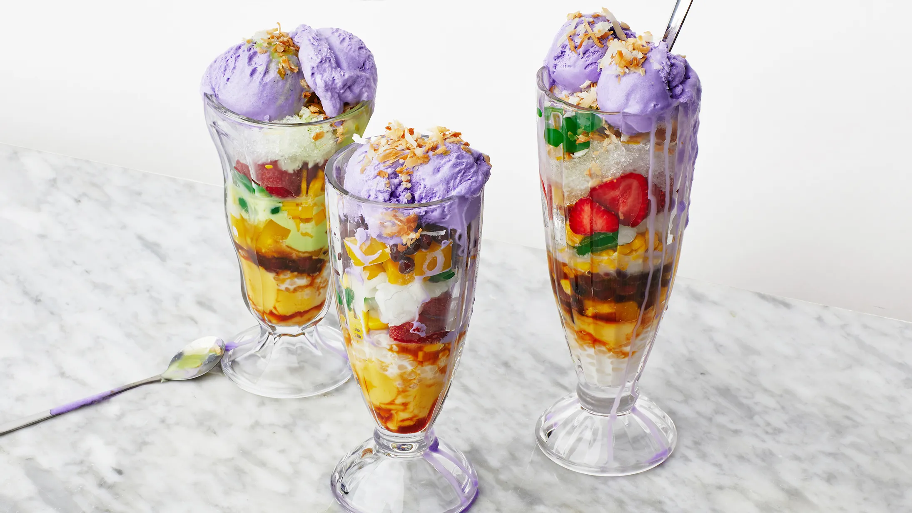

Halo-Halo
Colorful, icy, and wildly refreshing — Halo-Halo is the ultimate Filipino dessert made with a delightful mix of sweetened fruits, beans, jellies, and creamy toppings, perfect for beating the heat.
Preparation:
15-20 minutes active prep (plus chilling ingredients)
Cook:
Minimal (only if you need to prepare beans or make jellies from scratch)
Total:
About 30 minutes
Ingredients:
- Crushed ice (enough to fill serving glasses)
- 1/4 cup sweetened red mung beans (munggo)
- 1/4 cup sweetened garbanzo beans (chickpeas)
- 1/4 cup sweetened saba bananas (or ripe plantains)
- 1/4 cup jackfruit (langka), sliced
- 1/4 cup sweetened nata de coco (coconut jelly)
- 1/4 cup kaong (sugar palm fruit)
- 1/4 cup macapuno (coconut sport strings)
- 1/4 cup gulaman (agar-agar jelly), diced
- 1/4 cup sweet corn kernels (optional)
- Evaporated milk, to drizzle (about 2-4 tablespoons per glass)
- 1 scoop ube ice cream (purple yam ice cream), per serving
- Leche flan slice (optional, for topping)
- Pinipig (toasted rice flakes) or puffed rice, for garnish
Instructions:
- In a tall glass or bowl, layer a spoonful of each sweetened ingredient: mung beans, garbanzos, saba bananas, jackfruit, nata de coco, kaong, macapuno, gulaman, and sweet corn if using.
- Pack crushed ice on top of the layered ingredients until the glass is almost full.
- Drizzle a generous amount of evaporated milk over the ice.
- Top with a scoop of ube ice cream and a slice of leche flan if desired.
- Sprinkle with pinipig or puffed rice for extra crunch.
- Serve immediately with a long spoon — mix well ("halo-halo" literally means "mix-mix") before eating!